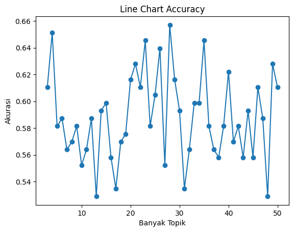

import pandas as pd
from sklearn.decomposition import LatentDirichletAllocation3 LDA Topic Modelling
https://colab.research.google.com/drive/1NbYxrreQxxRbDWm5L2F4KnPoGf5qQx3_?usp=sharing
3.1 Load Data
- Import Pandas untuk menjalankan dataframe
- Import library pada sklearn berupa LatentDirichletAllocation untuk melaukan ekstrak data menjadi data dokumen per topik
TF = pd.read_csv("/content/drive/MyDrive/ppw/tugas/tugas_ppw/TF_label.csv")
TF| aalysis | aam | abad | abadi | ability | abjad | absensi | absolut | absolute | abstract | ... | zat | zcz | zf | zona | zone | zoning | zoom | zucara | zungu | Label | |
|---|---|---|---|---|---|---|---|---|---|---|---|---|---|---|---|---|---|---|---|---|---|
| 0 | 0 | 0 | 0 | 0 | 0 | 0 | 0 | 0 | 0 | 0 | ... | 0 | 0 | 0 | 0 | 0 | 0 | 0 | 0 | 0 | RPL |
| 1 | 0 | 0 | 0 | 0 | 0 | 0 | 0 | 0 | 0 | 0 | ... | 0 | 0 | 0 | 0 | 0 | 0 | 0 | 0 | 0 | RPL |
| 2 | 0 | 0 | 0 | 0 | 0 | 0 | 0 | 0 | 0 | 0 | ... | 0 | 0 | 0 | 0 | 0 | 0 | 0 | 0 | 0 | RPL |
| 3 | 0 | 0 | 0 | 0 | 0 | 0 | 0 | 0 | 0 | 0 | ... | 0 | 0 | 0 | 0 | 0 | 0 | 0 | 0 | 0 | KK |
| 4 | 0 | 0 | 0 | 0 | 0 | 0 | 0 | 0 | 0 | 0 | ... | 0 | 0 | 0 | 0 | 0 | 0 | 0 | 0 | 0 | KK |
| ... | ... | ... | ... | ... | ... | ... | ... | ... | ... | ... | ... | ... | ... | ... | ... | ... | ... | ... | ... | ... | ... |
| 853 | 0 | 0 | 0 | 0 | 0 | 0 | 0 | 0 | 0 | 0 | ... | 0 | 0 | 0 | 0 | 0 | 0 | 0 | 0 | 0 | KK |
| 854 | 0 | 0 | 0 | 0 | 0 | 0 | 0 | 0 | 0 | 0 | ... | 0 | 0 | 0 | 0 | 0 | 0 | 0 | 0 | 0 | KK |
| 855 | 0 | 0 | 0 | 0 | 0 | 0 | 0 | 0 | 0 | 0 | ... | 0 | 0 | 0 | 0 | 0 | 0 | 0 | 0 | 0 | KK |
| 856 | 0 | 0 | 0 | 0 | 0 | 0 | 0 | 0 | 0 | 0 | ... | 0 | 0 | 0 | 0 | 0 | 0 | 0 | 0 | 0 | KK |
| 857 | 0 | 0 | 0 | 0 | 0 | 0 | 0 | 0 | 0 | 0 | ... | 0 | 0 | 0 | 0 | 0 | 0 | 0 | 0 | 0 | KK |
858 rows × 8649 columns
3.2 LDA
- Buat list kosong dengan nama datalda untuk menampung hasil topik per dokumen berdasarkan looping jumlah topik yng diinginkan mulai 3-51 topik
- jalankan library lda dan lakukan fit transform pada data yang sudah di load sebelumnya. hasil lda disimpan ke dalam variabel datalda. proses ini berlangsung sampai range mencapai batas akhir.
datalda=[]
for i in range (3,51):
lda = LatentDirichletAllocation(n_components=i, doc_topic_prior=0.2, topic_word_prior=0.1,random_state=42,max_iter=1)
lda_top=lda.fit_transform(TF.drop(columns='Label'))
datalda.append(lda_top)3.3 Naive Bayes
- Hasil LDA yang ditampung di dalam variabel LDA selanjutnya dilakukan spliting dan dilakukan pelatihan model dengan menggunakan metode Naive Bayes. hasil akurasi disimpan dalam variabel akurasi.
- Selanjutnya membuat looping untuk menampilkan akurasi berdasarkan jumlah topiknya. Dari semua akurasi tersebut divisualisasi juga dalam bentuk line chart.
- Dari model dengan jumlah topik yang memperoleh nilai akurasi terbaik akan disimpan dalam bentuk pickle untuk diimplementasikan dalam bentuk streamlit.
from sklearn.model_selection import train_test_split
from sklearn.naive_bayes import GaussianNB
import pickleakurasi=[]
for i in range(len(datalda)):
y = TF.Label
X_train,X_test,y_train,y_test = train_test_split(datalda[i],y,test_size=0.2,random_state=42)
NB = GaussianNB()
gaus=NB.fit(X_train, y_train)
nlakurasi=gaus.score(X_test, y_test)
akurasi.append(nlakurasi)for i in range(len(akurasi)):
print ("topik", i+3, ":", akurasi[i])topik 3 : 0.6104651162790697
topik 4 : 0.6511627906976745
topik 5 : 0.5813953488372093
topik 6 : 0.5872093023255814
topik 7 : 0.563953488372093
topik 8 : 0.5697674418604651
topik 9 : 0.5813953488372093
topik 10 : 0.5523255813953488
topik 11 : 0.563953488372093
topik 12 : 0.5872093023255814
topik 13 : 0.5290697674418605
topik 14 : 0.5930232558139535
topik 15 : 0.5988372093023255
topik 16 : 0.5581395348837209
topik 17 : 0.5348837209302325
topik 18 : 0.5697674418604651
topik 19 : 0.5755813953488372
topik 20 : 0.6162790697674418
topik 21 : 0.627906976744186
topik 22 : 0.6104651162790697
topik 23 : 0.6453488372093024
topik 24 : 0.5813953488372093
topik 25 : 0.6046511627906976
topik 26 : 0.6395348837209303
topik 27 : 0.5523255813953488
topik 28 : 0.6569767441860465
topik 29 : 0.6162790697674418
topik 30 : 0.5930232558139535
topik 31 : 0.5348837209302325
topik 32 : 0.563953488372093
topik 33 : 0.5988372093023255
topik 34 : 0.5988372093023255
topik 35 : 0.6453488372093024
topik 36 : 0.5813953488372093
topik 37 : 0.563953488372093
topik 38 : 0.5581395348837209
topik 39 : 0.5813953488372093
topik 40 : 0.622093023255814
topik 41 : 0.5697674418604651
topik 42 : 0.5813953488372093
topik 43 : 0.5581395348837209
topik 44 : 0.5930232558139535
topik 45 : 0.5581395348837209
topik 46 : 0.6104651162790697
topik 47 : 0.5872093023255814
topik 48 : 0.5290697674418605
topik 49 : 0.627906976744186
topik 50 : 0.6104651162790697lda1 = LatentDirichletAllocation(n_components=4, doc_topic_prior=0.2, topic_word_prior=0.1,random_state=42,max_iter=1)
lda_top1=lda1.fit_transform(TF.drop(columns='Label'))
y = TF.Label
X_train,X_test,y_train,y_test = train_test_split(lda_top1,y,test_size=0.2,random_state=42)
NB = GaussianNB()
gaus=NB.fit(X_train, y_train)
gaus.score(X_test, y_test)0.6511627906976745pickle.dump(lda1,open('/content/drive/MyDrive/ppw/tugas/tugas_ppw/lda_nb.sav','wb'))
pickle.dump(NB,open('/content/drive/MyDrive/ppw/tugas/tugas_ppw/nb.sav','wb'))import matplotlib.pyplot as plt
# Data
x = []
for i in range(3,51):
x.append(i)
y = akurasi
# Create a line chart
plt.plot(x, y, marker='o', linestyle='-') # 'o' for markers, '-' for solid line
# Add a title and axis labels
plt.title('Line Chart Accuracy')
plt.xlabel('Banyak Topik')
plt.ylabel('Akurasi')
# Show the plot
plt.show()
3.4 KNN
- Hasil LDA yang ditampung di dalam variabel LDA selanjutnya dilakukan spliting dan dilakukan pelatihan model dengan menggunakan metode KNN. hasil akurasi disimpan dalam variabel akurasi.
- Selanjutnya membuat looping untuk menampilkan akurasi berdasarkan jumlah topiknya.
- Dari dari model dengan jumlah topik yang memperoleh nilai akurasi terbaik akan disimpan dalam bentuk pickle untuk diimplementasikan dalam bentuk streamlit.
from sklearn.neighbors import KNeighborsClassifierakurasi2=[]
for i in range(len(datalda)):
y = TF.Label
X_train,X_test,y_train,y_test = train_test_split(datalda[i],y,test_size=0.2,random_state=42)
model2 = KNeighborsClassifier(n_neighbors=3)
knn=model2.fit(X_train, y_train)
nlakurasi2=knn.score(X_test, y_test)
akurasi2.append(nlakurasi2)for i in range(len(akurasi2)):
print ("topik", i+3, ":", akurasi2[i])topik 3 : 0.5930232558139535
topik 4 : 0.5930232558139535
topik 5 : 0.6104651162790697
topik 6 : 0.622093023255814
topik 7 : 0.5872093023255814
topik 8 : 0.5348837209302325
topik 9 : 0.6046511627906976
topik 10 : 0.5406976744186046
topik 11 : 0.563953488372093
topik 12 : 0.5872093023255814
topik 13 : 0.6046511627906976
topik 14 : 0.5872093023255814
topik 15 : 0.5988372093023255
topik 16 : 0.627906976744186
topik 17 : 0.5465116279069767
topik 18 : 0.5988372093023255
topik 19 : 0.6569767441860465
topik 20 : 0.5930232558139535
topik 21 : 0.5465116279069767
topik 22 : 0.5872093023255814
topik 23 : 0.5872093023255814
topik 24 : 0.6453488372093024
topik 25 : 0.6162790697674418
topik 26 : 0.6337209302325582
topik 27 : 0.5872093023255814
topik 28 : 0.5581395348837209
topik 29 : 0.5755813953488372
topik 30 : 0.5988372093023255
topik 31 : 0.6046511627906976
topik 32 : 0.5988372093023255
topik 33 : 0.6104651162790697
topik 34 : 0.6511627906976745
topik 35 : 0.5755813953488372
topik 36 : 0.627906976744186
topik 37 : 0.563953488372093
topik 38 : 0.5813953488372093
topik 39 : 0.6162790697674418
topik 40 : 0.5755813953488372
topik 41 : 0.5755813953488372
topik 42 : 0.5872093023255814
topik 43 : 0.6569767441860465
topik 44 : 0.6104651162790697
topik 45 : 0.627906976744186
topik 46 : 0.5755813953488372
topik 47 : 0.5755813953488372
topik 48 : 0.5465116279069767
topik 49 : 0.6686046511627907
topik 50 : 0.5813953488372093lda2 = LatentDirichletAllocation(n_components=49, doc_topic_prior=0.2, topic_word_prior=0.1,random_state=42,max_iter=1)
lda_top2=lda2.fit_transform(TF.drop(columns='Label'))
y = TF.Label
X_train,X_test,y_train,y_test = train_test_split(lda_top2,y,test_size=0.2,random_state=42)
model2 = KNeighborsClassifier(n_neighbors=3)
knn=model2.fit(X_train, y_train)
knn.score(X_test, y_test)0.6686046511627907pickle.dump(lda2,open('/content/drive/MyDrive/ppw/tugas/tugas_ppw/lda_knn.sav','wb'))
pickle.dump(model2,open('/content/drive/MyDrive/ppw/tugas/tugas_ppw/knn.sav','wb'))3.5 Decision Tree
- Hasil LDA yang ditampung di dalam variabel LDA selanjutnya dilakukan spliting dan dilakukan pelatihan model dengan menggunakan metode Decision Tree. hasil akurasi disimpan dalam variabel akurasi.
- Selanjutnya membuat looping untuk menampilkan akurasi berdasarkan jumlah topiknya.
- Dari model dengan jumlah topik yang memperoleh nilai akurasi terbaik akan disimpan dalam bentuk pickle untuk diimplementasikan dalam bentuk streamlit.
from sklearn import treeakurasi3=[]
for i in range(len(datalda)):
y = TF.Label
X_train,X_test,y_train,y_test = train_test_split(datalda[i],y,test_size=0.2,random_state=42)
model3 = tree.DecisionTreeClassifier()
dt=model3.fit(X_train, y_train)
nlakurasi3=dt.score(X_test, y_test)
akurasi3.append(nlakurasi3)for i in range(len(akurasi3)):
print ("topik", i+3, ":", akurasi3[i])topik 3 : 0.5755813953488372
topik 4 : 0.6046511627906976
topik 5 : 0.5930232558139535
topik 6 : 0.5290697674418605
topik 7 : 0.5581395348837209
topik 8 : 0.563953488372093
topik 9 : 0.5872093023255814
topik 10 : 0.5755813953488372
topik 11 : 0.627906976744186
topik 12 : 0.6162790697674418
topik 13 : 0.5755813953488372
topik 14 : 0.5930232558139535
topik 15 : 0.6511627906976745
topik 16 : 0.6627906976744186
topik 17 : 0.627906976744186
topik 18 : 0.5813953488372093
topik 19 : 0.6569767441860465
topik 20 : 0.627906976744186
topik 21 : 0.6337209302325582
topik 22 : 0.622093023255814
topik 23 : 0.6686046511627907
topik 24 : 0.6453488372093024
topik 25 : 0.5930232558139535
topik 26 : 0.6453488372093024
topik 27 : 0.6337209302325582
topik 28 : 0.6453488372093024
topik 29 : 0.627906976744186
topik 30 : 0.622093023255814
topik 31 : 0.6395348837209303
topik 32 : 0.6511627906976745
topik 33 : 0.622093023255814
topik 34 : 0.6744186046511628
topik 35 : 0.622093023255814
topik 36 : 0.6511627906976745
topik 37 : 0.6395348837209303
topik 38 : 0.6395348837209303
topik 39 : 0.6511627906976745
topik 40 : 0.622093023255814
topik 41 : 0.6395348837209303
topik 42 : 0.5988372093023255
topik 43 : 0.6511627906976745
topik 44 : 0.5930232558139535
topik 45 : 0.6395348837209303
topik 46 : 0.7093023255813954
topik 47 : 0.627906976744186
topik 48 : 0.6511627906976745
topik 49 : 0.6337209302325582
topik 50 : 0.6744186046511628lda3 = LatentDirichletAllocation(n_components=46, doc_topic_prior=0.2, topic_word_prior=0.1,random_state=42,max_iter=1)
lda_top3=lda3.fit_transform(TF.drop(columns='Label'))
y = TF.Label
X_train,X_test,y_train,y_test = train_test_split(lda_top3,y,test_size=0.2,random_state=42)
model3 = tree.DecisionTreeClassifier()
dt=model3.fit(X_train, y_train)
dt.score(X_test, y_test)0.7093023255813954pickle.dump(lda3,open('/content/drive/MyDrive/ppw/tugas/tugas_ppw/lda_dt.sav','wb'))
pickle.dump(model3,open('/content/drive/MyDrive/ppw/tugas/tugas_ppw/dt.sav','wb'))